→ Hứa quá xa nhưng vẫn trễ khi có cú sốc, và trễ thì mất khách: một bài toán quyết định bán cấu trúc điển hình cho DSS.
| Phát hiện (đo bằng SQL) | Số dòng | Xử lý |
|---|---|---|
| Zip mất số 0 đầu (01003 → 1003) | 25.022 | landing VARCHAR + lpad |
| Geolocation trùng: 1M dòng / 19K zip | 981.148 | median / zip |
| Tên thành phố lệch dấu ("são paulo") | 73.448 | strip_accents |
| Mốc thời gian sai thứ tự | 189 | gắn cờ, loại khỏi lag |
| review_id lặp giữa nhiều đơn | 789 | khóa (review_id, order_id) |
| Sản phẩm thiếu danh mục | 610 | 'unknown' |
| Tọa độ ngoài lãnh thổ Brazil | 42 | loại trước khi gộp |
12 luật làm sạch R01–R12, mỗi luật ghi số dòng bị ảnh hưởng vào etl.dq_result.
• 250 khách dùng nhiều địa chỉ → cần SCD Type 2
• 2.246 đơn trả nhiều phương thức → fact_payment grain riêng
• 1,3% đơn nhiều người bán → bridge table có trọng số
• 5 mốc thời gian / đơn → accumulating snapshot + role-playing date
• 3 bảng master data tự soạn: bang→vùng, ngày lễ/Black Friday, 73 danh mục → 10 nhóm ngành
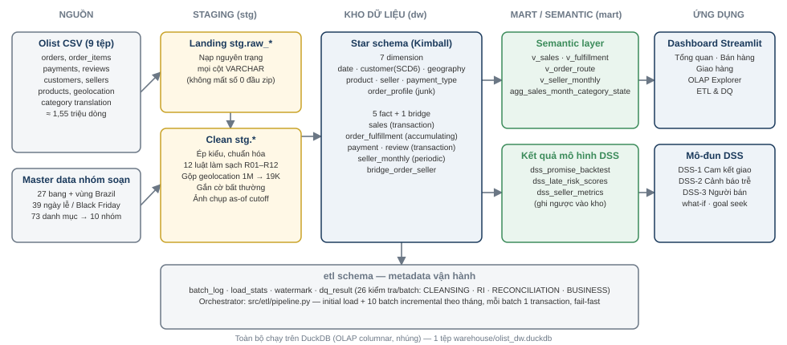
| Quy trình | Grain (1 dòng =) | Loại fact | Date | Customer | Geography | Product | Seller | Profile | Pay type |
|---|---|---|---|---|---|---|---|---|---|
| fact_sales | 1 dòng sản phẩm | Transaction | ✓×2 | ✓ | ✓×2 | ✓ | ✓ | ✓ | |
| fact_order_fulfillment | 1 đơn hàng | Accumulating | ✓×5 | ✓ | ✓ | bridge | ✓ | ||
| fact_payment | 1 lần thanh toán | Transaction | ✓ | ✓ | ✓ | ✓ | |||
| fact_review | 1 review | Transaction | ✓×3 | ✓ | bridge | ||||
| fact_seller_monthly | seller × tháng | Periodic snapshot | ✓ | ✓ |
Nguyên tử nhất → phân tích theo sản phẩm & người bán; câu hỏi cấp đơn vẫn trả lời bằng COUNT(DISTINCT order_id).
Giao hàng diễn ra ở cấp đơn → fulfillment grain đơn. Tách theo grain tránh lỗi trộn grain & đếm trùng.
Date, Customer, Geography, Seller dùng chung → drill-across doanh thu × trễ × hài lòng.
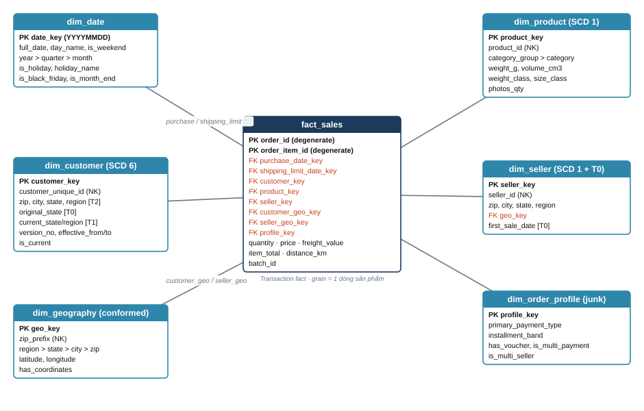
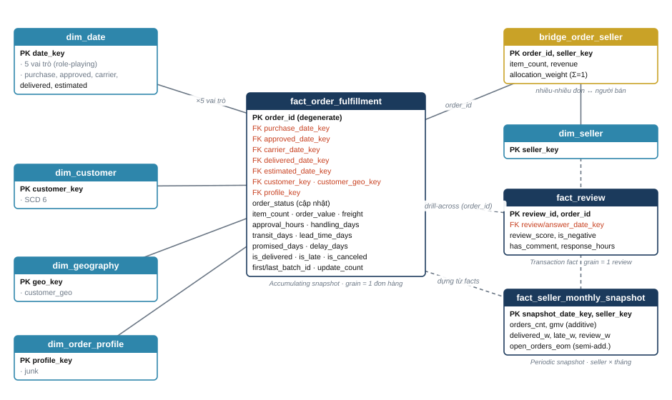
| Kỹ thuật | Ở đâu | Căn cứ dữ liệu |
|---|---|---|
| SCD 2 → Type 6 | dim_customer | khách đổi địa chỉ; cần cả as-was (T2) lẫn as-is (T1) + original (T0) |
| 3 loại fact | sales · fulfillment · seller_monthly | sự kiện / tiến trình nhiều mốc / trạng thái định kỳ |
| Conformed + bus matrix | Date, Customer, Geography, Seller | drill-across 3 fact (Q08) |
| Degenerate | order_id, order_item_id | truy vết đơn, khóa drill-across |
| Junk | dim_order_profile (160 tổ hợp) | 5 cờ thanh toán/đơn → 1 FK |
| Role-playing | date ×5, geography ×2 | 5 mốc của đơn; nơi gửi → nơi nhận |
| Bridge có trọng số | bridge_order_seller | review/trễ ở cấp đơn, đơn nhiều người bán |
| Aggregate table | agg_sales_month_category_state | dashboard nhanh hơn 8,3× |
Mini-dimension (RFM) được cân nhắc nhưng không dùng: 96,9% khách chỉ mua 1 lần → thuộc tính hành vi gần như không đổi.
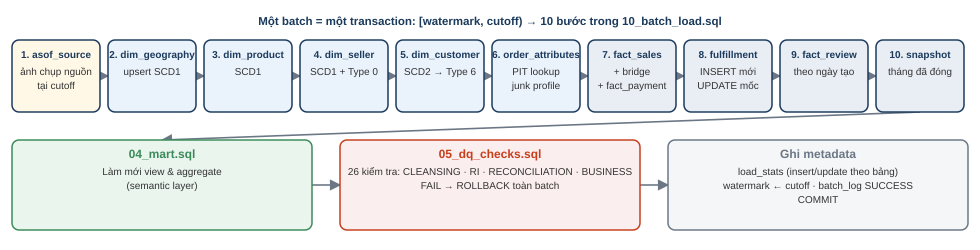
Bước asof_source: mốc > cutoff coi như chưa xảy ra → accumulating snapshot được UPDATE thật: 21.392 lần, trạng thái cuối khớp nguồn 100%.
LAG so sánh địa chỉ với bản hiện hành → đóng/mở phiên bản; 259 phiên bản mới. Fact tra cứu point-in-time: ts ∈ [from, to).
26 kiểm tra DQ; RI/đối soát FAIL → ROLLBACK. Watermark, load_stats, batch_log. 1–2 giây/batch.
| Nhóm kiểm tra (mỗi batch) | Lỗi |
|---|---|
| RI: mọi FK của 5 fact + bridge (cả 5 vai trò date) | 0 |
| RC: số dòng, doanh thu tới cent, tổng thanh toán | 0 |
| RC: Σ trọng số bridge = 1 mỗi đơn | 0 |
| RC: SCD2 — 1 bản hiện hành, khoảng liên tục | 0 |
| RC: GMV snapshot = GMV fact | 0 |
| BR: review ∈ [1,5], giá không âm | 0 |
| BR: thanh toán lệch tổng đơn > 1 BRL (lãi trả góp) | 312 (INFO) |
• mọi dòng fact trỏ đúng phiên bản khách có hiệu lực lúc mua
• periodic snapshot dense: đủ seller × tháng
• tổng ROLLUP = tổng các tháng; 14 truy vấn OLAP chạy được
• 8/8 trang dashboard qua streamlit AppTest
| Phép | Ví dụ |
|---|---|
| ROLLUP · drill-down | Năm › Quý › Tháng; Electronics → danh mục |
| Slice · Dice · Pivot | 2018 × vùng; H1 × Sudeste × 2 ngành × thẻ |
| CUBE · GROUPING SETS | vùng × thanh toán; luồng hàng vùng→vùng |
| Drill-across | doanh thu × % trễ × review (3 fact) |
| Window | Top-3 ngành/vùng; MA3, MoM, YoY |
| SCD 6 | doanh thu as-was vs as-is |
| Semi-additive | tồn đơn cuối kỳ |
Cộng tồn đơn 3 tháng: 14.170 (sai)
TB cuối tháng: 4.723 · Tồn cuối quý: 5.217
Fact chi tiết + 3 join: 30,5 ms → bảng tổng hợp: 3,7 ms (8,3×)
đủ cho tương tác thời gian thực trên dashboard
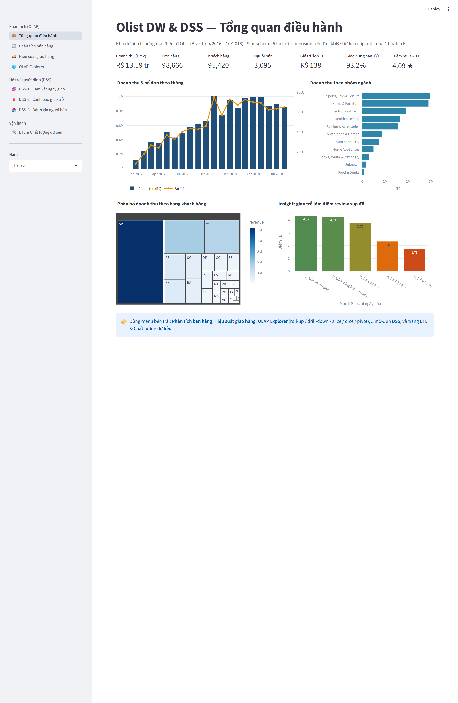
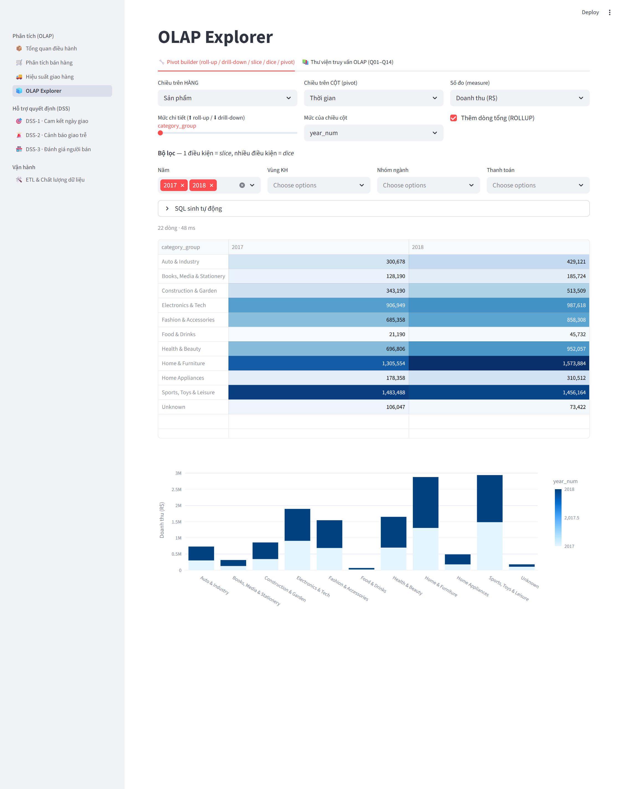
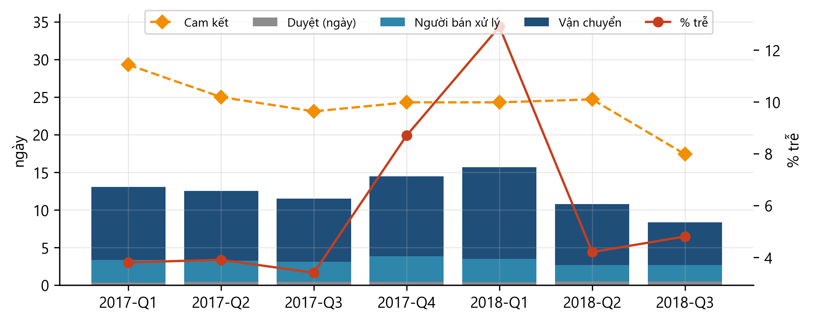
Accumulating snapshot: cam kết ~24 ngày cố định, nhưng vận chuyển tăng vọt 2018-Q1 → % trễ 12,9%.
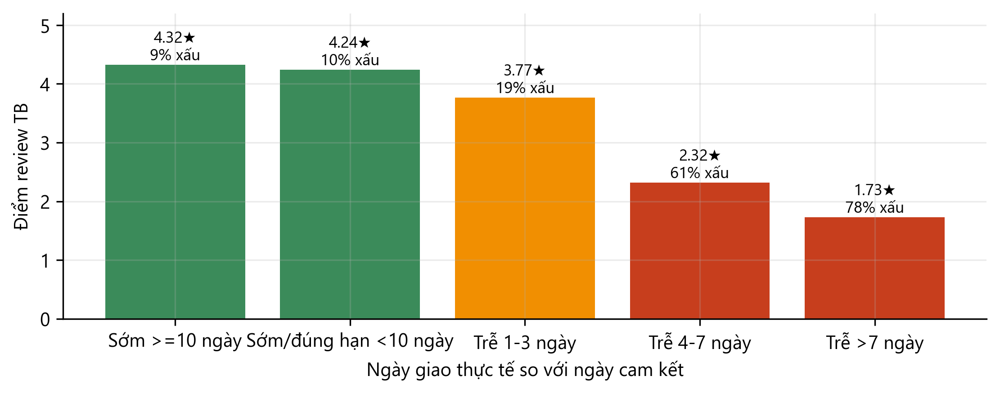
Drill-across fulfillment × review: trễ > 7 ngày → 1,73★, 78% đánh giá xấu.
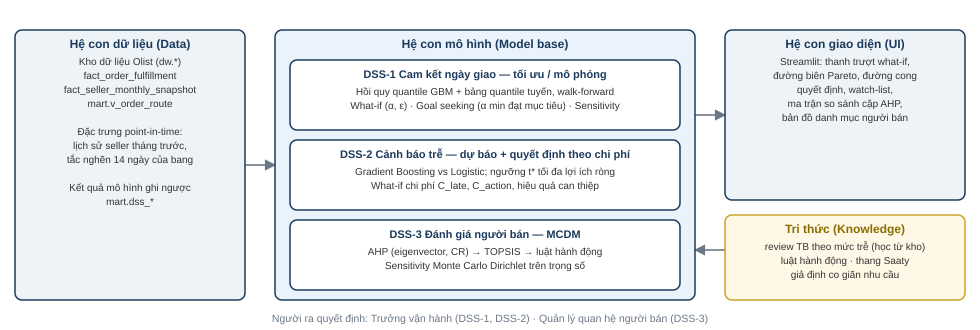
| Pha | DSS-1 Cam kết giao | DSS-2 Cảnh báo trễ | DSS-3 Người bán |
|---|---|---|---|
| Design | biến QĐ α; hồi quy quantile | ngưỡng t; GBM + ma trận chi phí | tiêu chí, so sánh cặp AHP |
| Choice | Pareto, goal seek, sensitivity | tối đa lợi ích ròng | TOPSIS + Monte Carlo |
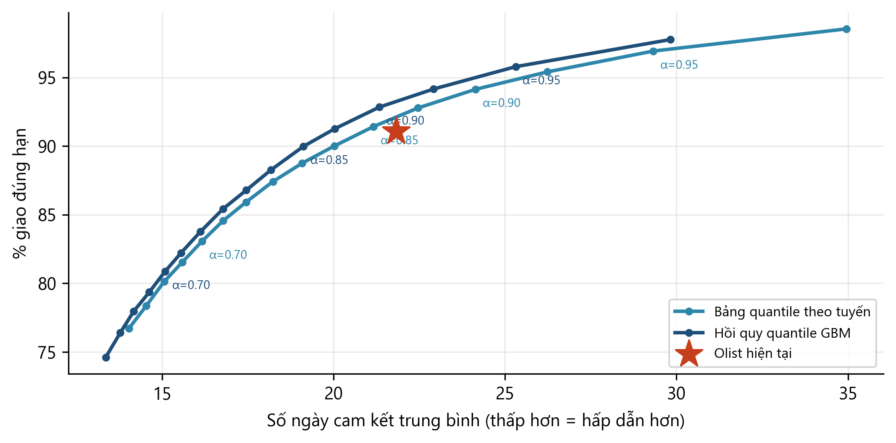
Walk-forward 03–08/2018 (38.350 đơn): mỗi tháng train lại trên 6 tháng trước, bỏ 1 tháng đệm vì đơn chưa giao xong (right-censoring).
cam kết = ⌈Q̂α(lead time | tuyến, km, kg, phí, mùa)⌉ — hồi quy quantile GBM; bảng theo tuyến làm phương án dễ giải thích.
Cùng 91,1% đúng hạn → −1,9 ngày cam kết (−8,8%)
Cùng 21,8 ngày → 93,2% đúng hạn (+2,2 điểm)
mục tiêu 92% → α = 0,90 (21,3 ngày); độ co giãn ε chỉ đổi độ lớn, không đổi kết luận.
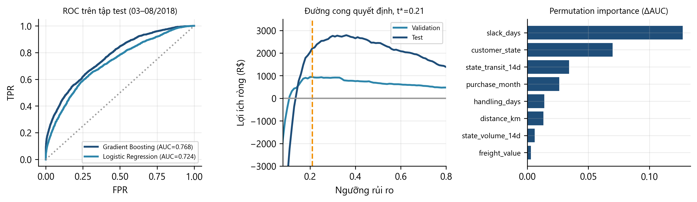
Chấm lúc duyệt đơn: AUC 0,65 ✗ → dời sang lúc bàn giao vận chuyển + đặc trưng point-in-time: slack_days, tắc nghẽn 14 ngày của bang, lịch sử seller tháng trước.
GBM AUC 0,768 (LR 0,724) · PR-AUC 0,327 · lift top-10% 3,8×
B(t) = TP·Clate·e − (TP+FP)·Caction → t* = 0,21: gắn cờ 3,5%, precision 45,0% (> hòa vốn 32%), lợi ích ròng dương.
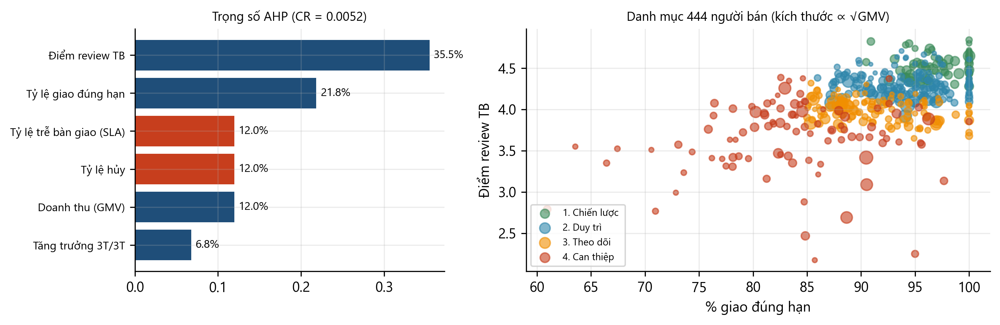
6 tiêu chí từ periodic snapshot; so sánh cặp Saaty trên giao diện; CR = 0,005 < 0,1; review 35,5%, đúng hạn 21,8%.
444 người bán: 67 Chiến lược · 154 Duy trì · 126 Theo dõi · 97 Can thiệp (SLA trễ 16,3% vs 3,6%).
500 mô phỏng Dirichlet trên trọng số: Spearman ρ trung vị 0,974; chỉ ra các ca giáp ranh cần xem xét thủ công.
• Kho đầy đủ: 5 fact, 7 dim, SCD 6, ETL tăng dần
• 26 kiểm tra DQ/batch, 24 test, khớp nguồn tới cent
• 14 truy vấn OLAP < 100 ms, dashboard 8 trang
• 3 DSS đánh giá ngoài mẫu, what-if/goal seek/sensitivity
• Nguồn thiếu thời điểm hủy, lịch sử sản phẩm/seller → mô phỏng as-of gần đúng
• Co giãn nhu cầu, chi phí can thiệp là giả định (đã tham số hóa)
• Cú sốc vận chuyển không dự báo trước được
• DuckDB nhúng: chưa đa người dùng
• Airflow + PostgreSQL/cloud DW, dbt (ELT), CDC
• Cam kết động theo tắc nghẽn; conformal prediction
• Uplift modeling cho can thiệp; tối ưu ngân sách
• Group AHP; phân tích văn bản review
pipeline.py → build_dss.py → streamlit run src/app/app.py